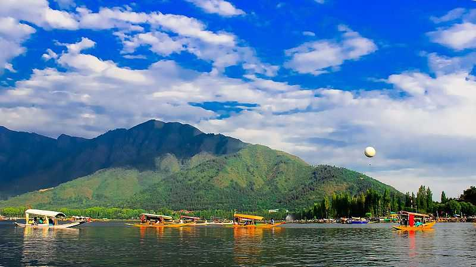
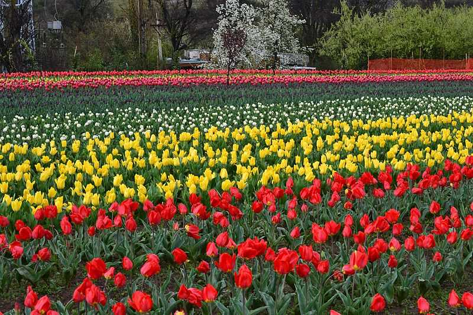
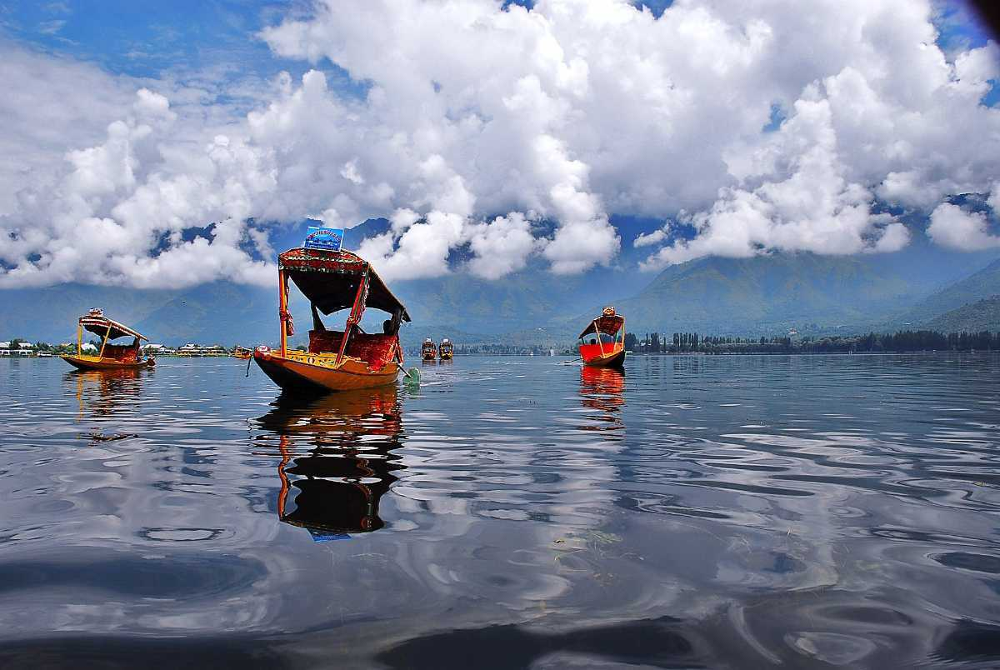
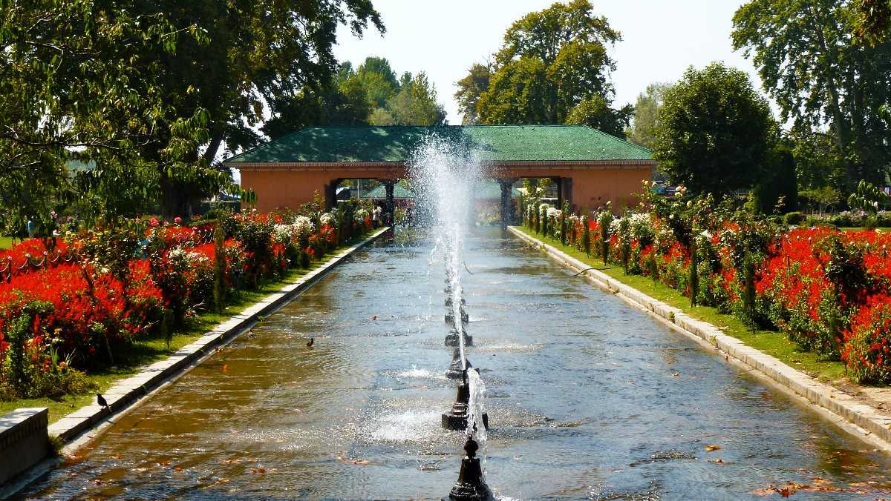
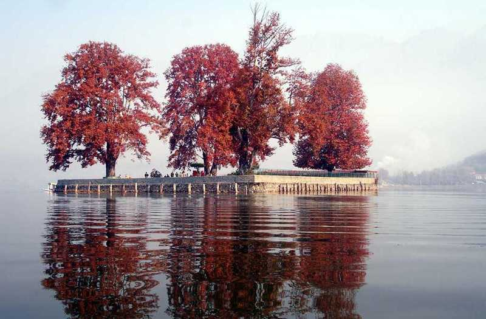
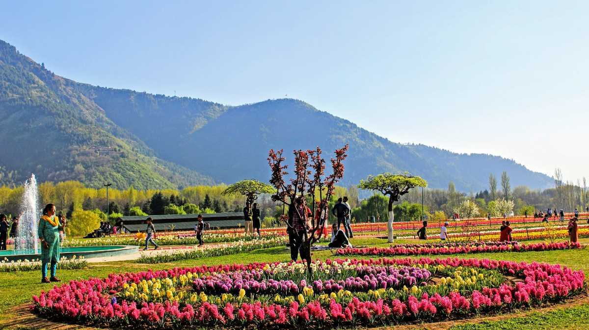

Dal Lake
The famous Dal Lake is the second-largest lake in Jammu & Kashmir. The mirror-like lake reflects the peaks of the Pir Panjal mountains while the colourful shikaras (gondolas) float around. The houseboats and shikaras are its main attractions.

Indira Gandhi Memorial Tulip Garden
Indira Gandhi Memorial Tulip Garden is the largest tulip garden in Asia which is set in the foothills of the Zabarwan mountain range in Srinagar. Formerly known as Model Floriculture Center, it overlooks the mesmerising Dal Lake. The Tulip Festival held here is the highlight which attracts tourists from the world over.

Shikara ride
Embark on a mesmerizing Shikara ride in Srinagar, an experience that unveils the serene charm of the city's iconic waterways. Gliding along the tranquil Dal Lake or the winding Jhelum River, you'll be immersed in breathtaking views of the surrounding mountains, Mughal gardens, and vibrant floating markets

Shalimar Bagh
Shalimar Bagh is the largest of the three Mughal gardens in Srinagar. It is now a public park and is known as the "crown of Srinagar". The chini khanas or arched niches placed behind waterfalls and the chinar trees are the highlights here.

Char Chinar
Char Chinar is an island in the Dal Lake of Srinagar, surrounded by the Chinar trees on all four sides of it. Also known as Char Chinari (char chinari means four sides) and Rupa Lank, it was constructed by Murad Baksh, the brother of Mughal emperor Aurangzeb. The Char Chinar is best explored during a shikara ride in the Dal Lake.

Nehru Garden
Providing the best view of the Dal lake is Nehru Garden, a botanical garden in Srinagar. It was built in 1969 in the memory of Pandit Jawaharlal Nehru. The Nehru Garden is popular for housing a collection of rare Kashmiri tropical plants. Other things to see include 15000 ornamental plants and a collection of oak trees.